Irish Potato Flatbread | Cooked | Oil-Free | 3 Ingredients
Crispy on the outside, fluffy in the middle…this vegan, gluten-free, oil-free, nut-free flatbread is reminiscent of Irish Potato Bread. The minute I started mixing the dough together, I knew that I was in love. The more I kneaded it, the more I NEEDED it! (Yeah, I am a funny one.) With only 3 ingredients, you can quickly pull together a wonderful flatbread for any meal of the day. I have a strong feeling that you can appreciate the convenience.
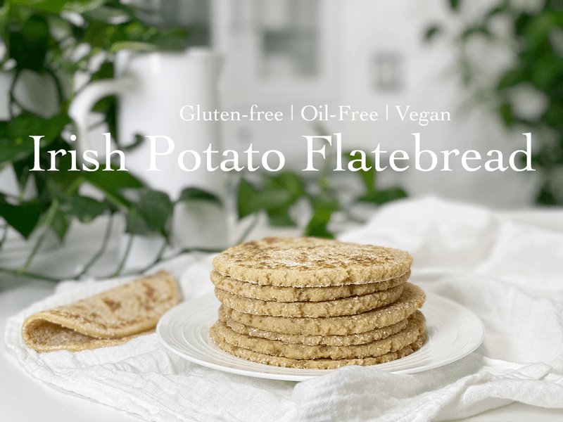
I am always hesitant when titling a recipe using common mainstream food name because it automatically conjures up a preconceived idea as to what the recipe will be like. Although this can be helpful, I find that it messes with the insular cortex which is the area of the brain responsible for storing memories of taste. But I have to tell you that these potato flatbreads, which are also known as Irish Potato bread, fadge, slims, potato cake, or potato falls — hit the spot when it comes to seeking healthy comfort food.
As they were cooking, they smelled like french fries to me, which immediately started to make my mouth water. Hot off the griddle I spread some sugarless strawberry jam on top and took a bite. Slap me into next week…it was amazing. I hunted Bob down and asked if he wanted to try it. He said, “I’ll try a little bit.” Chew, chew, swallow, grin. “Can I have half of one right now?” Chew, chew, swallow, grin. “Can I have the other half?” Chew, chew, swallow, grin. “Can I have another half of one?” I think he liked it.
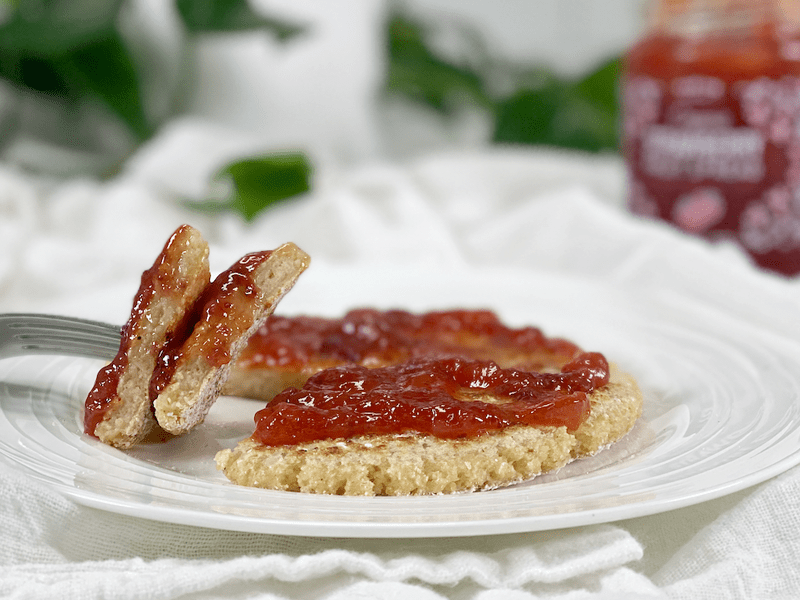
What to Expect
Texture-wise, these potato flatbreads are sturdy, soft, flexible, bendable, chewy, and remind me somewhat of a pancake, but heartier. In the flavor department, they remind me of my all-time favorite childhood food, Norweigan lefsa–so much so that I am daydreaming of creating some gluten-free lefsa in the near future. But, if you aren’t familiar with lefsa, it’s safe to say that their taste is like mild potato bread with a faint hint of sweetness. They can be enjoyed by themselves or alongside savory or sweet dishes.
Techniques and Tips
Potatoes
- You’ll need a fluffy potato for this recipe. Waxy potatoes are not the best choice but can work if that’s all you have on hand. I prefer to use Yukon Gold potatoes.
- This recipe can be made with leftover mashed potatoes, or if you’re like me and batch cook potatoes for the week, this recipe is a great way to use up leftover spuds.
- If using leftover mashed potatoes, make sure they don’t have milk, cream, or butter in them. If they do, you will need to add extra flour to the dough. This will still work, but your potato cakes will take longer to cook through.
- 2 cups of mashed potatoes works out at about 1 pound of raw potatoes boiled and mashed, so for this recipe, you will need 4 cups of mashed potatoes.
Gluten-Free Rolled Oats
- Potato flatbread (Irish Potato Bread) is typically made with all-purpose flour. Since I am gluten-free, I am using rolled oats that have been blitzed to a flour-like texture. This will provide a coarser texture and nuttier flavor to the recipe.
Cooking
- These flatbreads are dry-fried in either a non-stick frying pan or on a griddle, making them healthier.
- Traditional Irish Potato cakes aren’t golden brown. They are more on the pale cream on the color spectrum adorned with brown splotches, which is due to their not having any fat in them.
- You kind of have to go by sight when cooking them to gauge when they are done. It will vary depending on how thick or thin you rolled them out. The dough will feel springy when you push down on them.
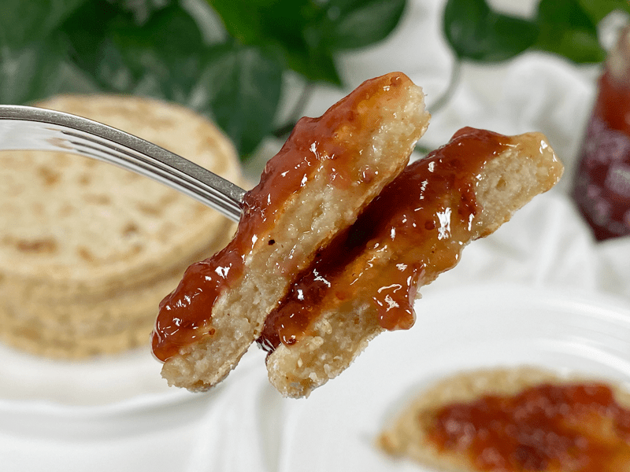
How to Enjoy Potato Flatbreads
- Serve as-is, warmed, room temperature, or chilled.
- They taste great with jam on them.
- Top with smashed avocado and fresh slices of garden tomatoes.
- Eat alongside a bowl of soup, dipping it to sop up the flavor.
- Cook them in a circular shape and use as a pizza crust.
- Top with roasted beets and a dollop of vegan sour cream and horseradish sauce.
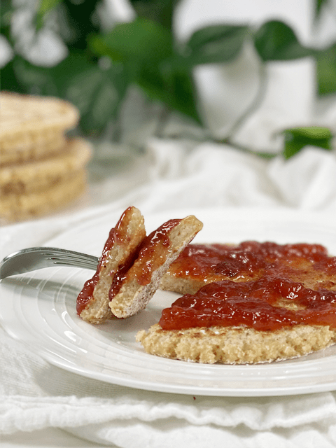
Ingredients
Yields 8 (roughly 4-5″) flatbreads
- 2 lbs white potatoes, steamed
- 1 3/4 cups gluten-free rolled oats, floured
- 1 tsp sea salt
- Rolling – additional 1/2 cup oat flour
Preparation
- After steaming the potatoes, cube and mash them in a medium-large mixing bowl.
- If you need assistance in steaming potatoes, click (here) where I show you how to steam them either on the stove top or Instant Pot (my favorite method).
- Add 1/2 cups of oat flour, along with the salt, and start GENTLY mixing it together. Continue adding 1/2 of the remaining flour at a time until a nice dough forms.
- Turn out onto a lightly floured area.
- With your hands, gently fold the dough over and over onto itself until smooth and “drier” (non-sticky).
- If using freshly cooked potatoes that are still warm, wait till they are cool enough to handle.
- Divide the dough into 6 equal portions and form each into a ball.
- On a lightly dusted surface, roll each ball out to about 1/3″ thick.
- Brush off the extra flour before placing it on the hot pan.
- Heat a non-stick pan or griddle to medium to medium-high. When hot, begin cooking the flatbread.
- Do not use oil when cooking the flatbread, as that will make it greasy and heavy.
- Cook for roughly 2 1/2 minutes per side. When brown dots appear on both sides, place on a clean tea towel, cover, and let cool while you cook the remaining dough.
Storing/Freezing/Reheating
- These flatbreads will keep in the fridge for up to 3 days. You can reheat them in a pan, toaster, or in the oven.
- If you are looking to make extra to freeze, do so before cooking them. Lay them out on a baking tray, then pop it in the freezer for an hour. Transfer them to a freezer bag or container, in layers, placing parchment paper between each one to stop them from sticking together.
- If you have extra COOKED flatbreads and which to freeze them, that’s okay too. After cooking, allow them to cool and then wrap individually, to make it easy to defrost and to prevent them from sticking together. To reheat, allow them to defrost for 10-15 minutes and then reheat in the toaster.
-
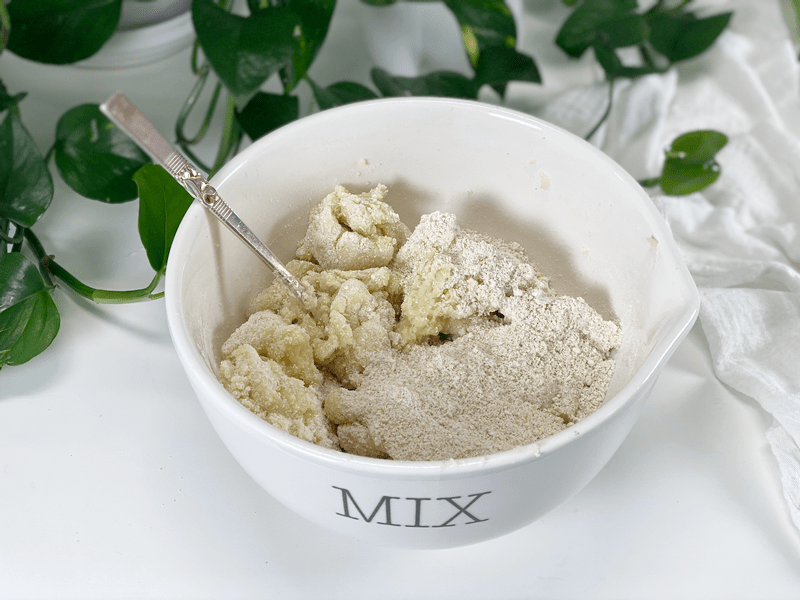
-
After mashing the potatoes, add 1/2 cup of oat flour at a time.
-
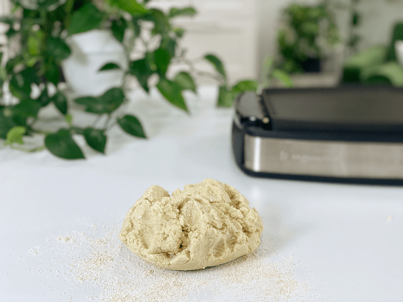
-
Place the dough on a flour-dusted surface and knead until smooth and non-sticky.
-
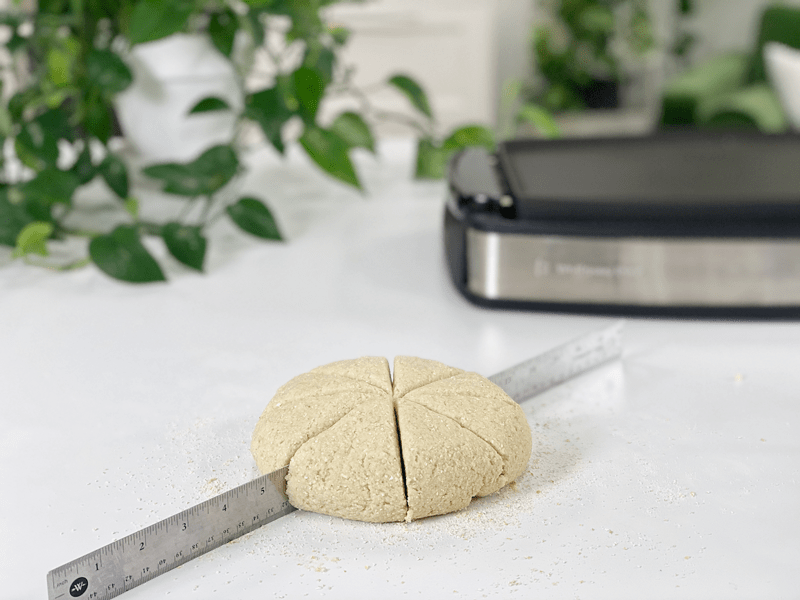
-
Divide the dough into 6 equal portions. P.S. I have been using this stainless steel ruler in my kitchen for 10 years now. It’s perfect for moments like this and for when I am scoring crackers that I plan on dehydrating or baking.
-
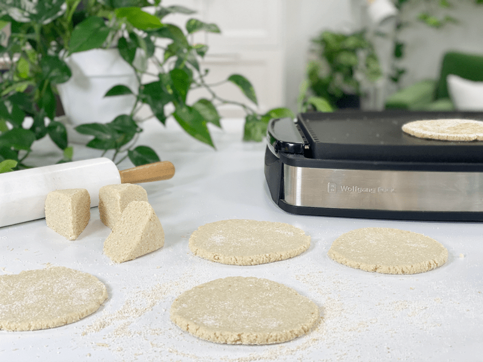
-
Roll each portion out into a circle that is roughly 1/3″ thick.
-
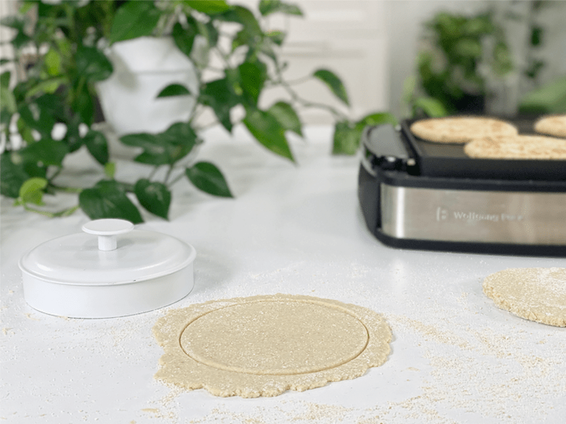
-
You can also make sandwich wraps out of them. Simply roll thinner and cut them out to size you want.
-
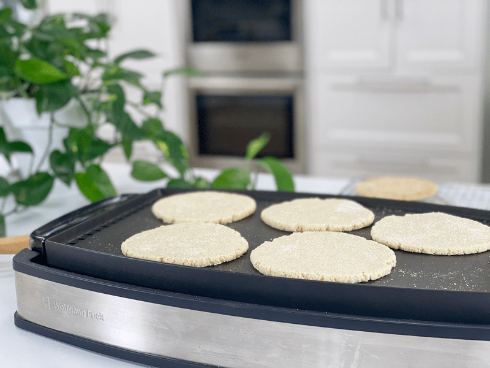
-
Place on a preheated pan or griddle. My griddle is set to 400 degrees (F).
-
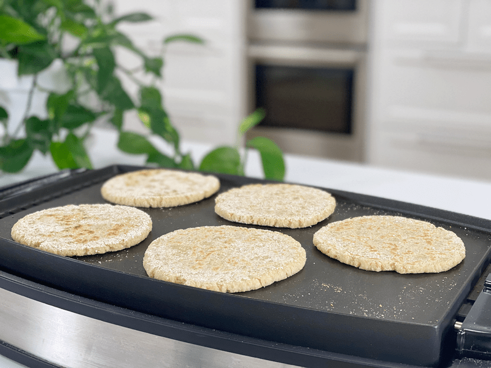
-
Cook each side for about 2 1/2 minutes each.
-
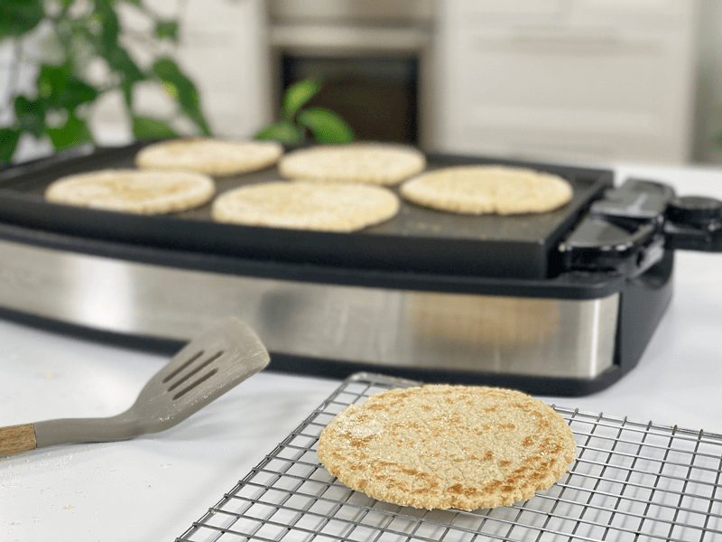
-
When they are done cooking, remove from the heat and place on a cooling rack. Cover with a towel while the others cook.
© AmieSue.com